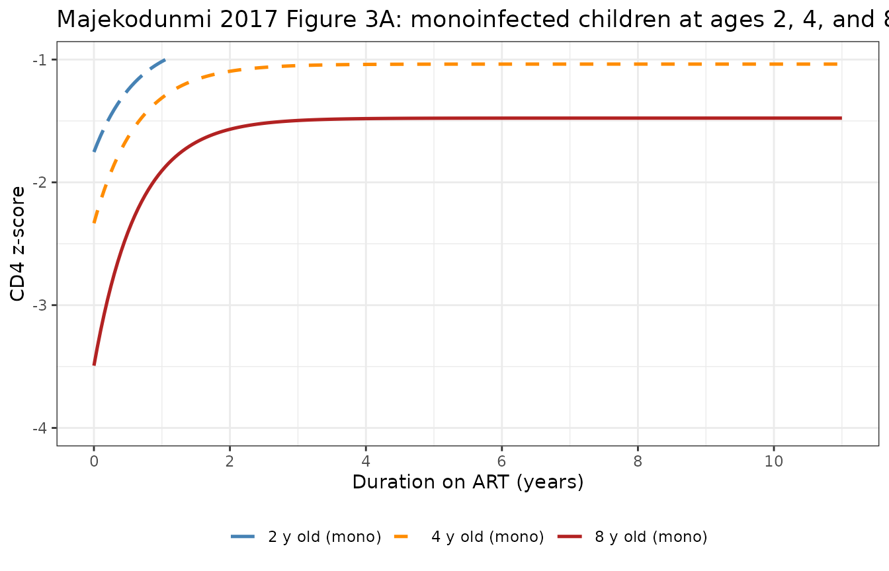
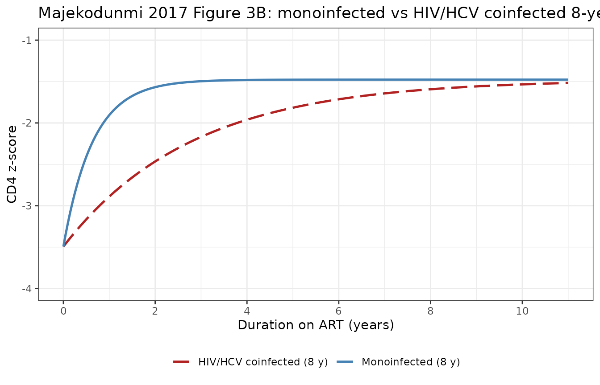
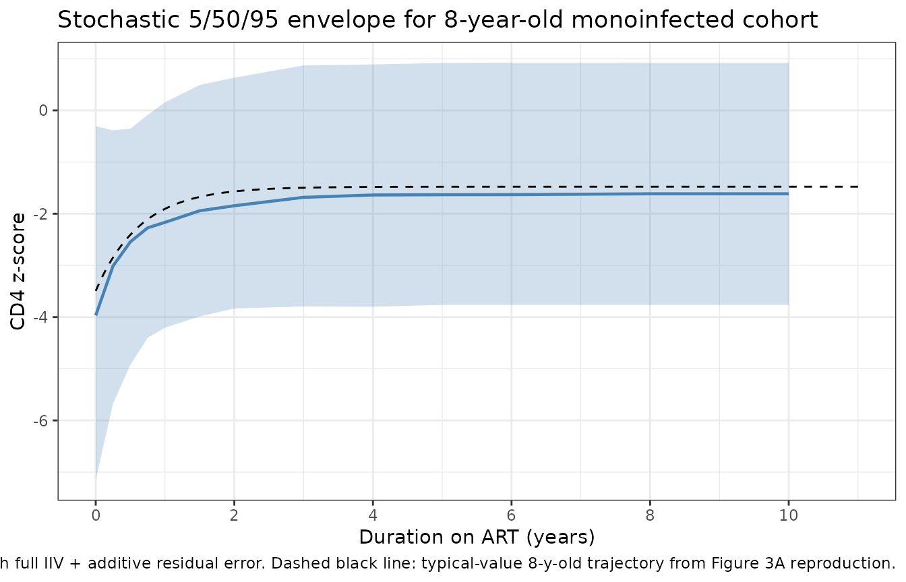

Pediatric HIV/HCV CD4 z-score recovery on ART (Majekodunmi 2017)
Source:vignettes/articles/Majekodunmi_2017_HIV_HCV_CD4_recovery.Rmd
Majekodunmi_2017_HIV_HCV_CD4_recovery.RmdModel and source
- Citation: Majekodunmi AO, Thorne C, Malyuta R, Volokha A, Callard RE, Klein NJ, Lewis J; on behalf of The European Paediatric HIV/HCV Co-infection Study group in the European Pregnancy and Paediatric HIV Cohort Collaboration and the Ukraine Paediatric HIV Cohort Study in EuroCoord. Modelling CD4 T Cell Recovery in Hepatitis C and HIV Co-infected Children Receiving Antiretroviral Therapy. Pediatr Infect Dis J. 2017 May;36(5):e123-e129. doi:10.1097/INF.0000000000001478.
- Article: https://doi.org/10.1097/INF.0000000000001478
- Description: Longitudinal disease-progression / immune-reconstitution model for age-standardised CD4 T-cell counts (z-scores) in HIV-infected children receiving antiretroviral therapy (ART), with HIV/HCV coinfection slowing the recovery rate (Majekodunmi 2017, fit to 401 children – 355 HIV monoinfected and 46 HIV/HCV coinfected – from the Ukraine Paediatric HIV Cohort Study and the EPPICC HIV/HCV coinfection study across 8 European countries). The age-standardised CD4 z score is modelled as an asymptotic recovery curve z(t) = asy + (int - asy) * exp(-krec * t), where t is duration on ART, int is the pre-ART z score, asy is the long-term z score, and krec (the paper’s symbol c) is the per-subject recovery rate (1/year; ln(2)/krec is the time to half the total recovery from int to asy; renamed from the paper’s c to avoid shadowing R’s built-in c() combine function). Age at start of ART (centred at 4.3 years – the all-cohort median per Table 2 footnote) shifts both asy and int (younger children start higher and reach higher long-term levels). EPPICC enrollment country shifts int with Ukraine as the implicit reference. HCV coinfection is a multiplicative fractional reduction on krec: krec_coinf = krec_mono * (1 + e_hcv_pos_krec * HCV_POS) with e_hcv_pos_krec = -0.77, so coinfected children recover at krec = 1.55 * 0.23 = 0.357 /year (half-time ~2 years) versus 1.55 /year for monoinfected (half-time ~0.45 year). Disease-progression model with no drug dosing – the population were on combination ART (most commonly lamivudine + zidovudine + lopinavir/ritonavir) and the model’s t = 0 is the time of ART initiation.
Population
Majekodunmi 2017 pooled two pediatric HIV cohorts: the Ukraine Paediatric HIV Cohort Study (HIV monoinfected children, n = 355, all from Ukraine) and the EPPICC HIV/HCV coinfection sub-study (n = 46 across 8 European countries – Russia 17, Ukraine 18, Switzerland 3, Spain 2, UK 2, Italy 2, Germany 1, Poland 1). The pooled analytic cohort is 401 children with longitudinal CD4 measurements after ART initiation. Median age at ART start was 4.40 years (IQR 1.73-7.07) for monoinfected and 3.12 years (IQR 1.31-5.65) for coinfected; the all-cohort reference age used in the model is 4.3 years (Table 2 footnote). Median follow-up on ART was 4.2 years overall (IQR 2.7-5.3), with a median of 5 CD4 measurements per child (IQR 3-7). Sex was approximately balanced (monoinfected 48.2% male / 51.8% female; coinfected 43.5% male / 54.3% female / 2.2% unknown). The most common ART regimen across both cohorts was lamivudine + zidovudine + kaletra (lopinavir/ritonavir); 33% of monoinfected and 49% of coinfected children received a 3-drug ART regimen.
The same demographic detail is available programmatically via
readModelDb("Majekodunmi_2017_HIV_HCV_CD4_recovery")$population.
Source trace
The recovery model (Majekodunmi 2017 Equation 1, schematic in Figure 1) is
with
the duration on ART for child
,
the pre-ART z score,
the long-term z score,
the per-subject recovery-rate constant, and
an additive residual error. The half-recovery time from
to
is
.
In the packaged model the symbol
is renamed krec to avoid shadowing R’s built-in
c() combine function; the symbol
is renamed intercept to avoid the C reserved word
int (rxode2 transpiles to C).
The per-parameter origin is recorded as an in-file comment next to
each ini() entry. The table below collects them in one
place.
| Equation / parameter | Value (SE) | Source location |
|---|---|---|
asy (typical long-term z score, Ukraine ref, AGE = 4.3
y) |
-1.07 (0.08) | Table 2 row Asy |
e_age_asy |
-0.11 (0.03) | Table 2 row Asy:age |
intercept (typical pre-ART z score, Ukraine ref, AGE =
4.3 y) |
-2.42 (0.28) | Table 2 row Int |
e_age_intercept |
-0.29 (0.09) | Table 2 row Int:age |
e_region_poland_intercept |
+0.44 (0.29) | Table 2 row Int:Poland |
e_region_russia_intercept |
+0.69 (0.57) | Table 2 row Int:Russia |
e_region_switzerland_intercept |
+0.02 (0.77) | Table 2 row Int:Switzerland |
e_region_uk_intercept |
-17.5 (0.93) | Table 2 row Int: United Kingdom |
e_region_spain_intercept |
+2.89 (0.71) | Table 2 row Int:Spain |
e_region_germany_intercept |
+0.34 (0.29) | Table 2 row Int:Germany |
e_region_italy_intercept |
-3.63 (1.50) | Table 2 row Int:Italy |
krec (typical recovery rate, 1/y; paper’s
c) |
1.55 (0.63) | Table 2 row c |
e_hcv_pos_krec |
-0.77 (0.09) | Table 2 row C:Coinf |
addSd (residual SD on z-score) |
1.43 (0.16) | Table 2 row ‘Residual error’ |
| Variance of REs: asy | 1.83 | Table 2 column ‘Variance of REs’, Asy row |
| Variance of REs: intercept | 4.78 | Table 2 column ‘Variance of REs’, Int row |
| Variance of REs: krec | 0.39 | Table 2 column ‘Variance of REs’, c row |
| Reference age (centring) | 4.3 y | Table 2 footnote |
| Reference cohort | Ukraine | Table 2 footnote |
| Asymptotic-recovery functional form | n/a | Methods ‘Mixed-effects Modeling’ and Equation 1 |
Variances of random effects are encoded as additive
normal on the natural (z-score) scale for asy and
intercept, and additive normal on the linear (1/year) scale
for krec, matching the source paper’s “Variance of REs”
column (which reports raw variances, not %CV).
Errata
No published erratum or corrigendum was located for this paper as of the model extraction date (2026-05-22). The paper itself notes two limitations the consumer should keep in mind. First, the HIV monoinfected cohort was drawn entirely from Ukraine while the HCV coinfected cohort spans 8 European countries; the model carries 7 EPPICC enrollment-country indicator covariates on the pre-ART intercept to absorb the resulting laboratory / clinical-practice differences, with Ukraine as the implicit reference. Second, two of the country-effect estimates rest on very small subgroups (UK n = 2, Italy n = 2) and the UK estimate of -17.5 z-score units is implausibly large for a CD4 z score effect, almost certainly a small-sample artifact – see Assumptions and deviations.
Verify the model and parameters are loaded correctly
The model loads via readModelDb(). Quick sanity check on
the parameter values is done by reading the fixed-effect typical-value
parameters back from the model.
mod <- readModelDb("Majekodunmi_2017_HIV_HCV_CD4_recovery")
mod_typ <- rxode2::zeroRe(mod)
#> ℹ parameter labels from comments will be replaced by 'label()'
typical_theta <- mod_typ$theta
knitr::kable(data.frame(parameter = names(typical_theta),
value = unname(typical_theta)),
digits = 4,
caption = "Typical-value (fixed-effect) parameters as packaged.")| parameter | value |
|---|---|
| asy | -1.07 |
| e_age_asy | -0.11 |
| intercept | -2.42 |
| e_age_intercept | -0.29 |
| e_region_poland_intercept | 0.44 |
| e_region_russia_intercept | 0.69 |
| e_region_switzerland_intercept | 0.02 |
| e_region_uk_intercept | -17.50 |
| e_region_spain_intercept | 2.89 |
| e_region_germany_intercept | 0.34 |
| e_region_italy_intercept | -3.63 |
| krec | 1.55 |
| e_hcv_pos_krec | -0.77 |
| addSd | 0.00 |
Reproducing Figure 3A: monoinfected children at ages 2, 4, and 8 years
Majekodunmi 2017 Figure 3A shows the typical-value (fixed-effect) CD4
z-score recovery trajectory for monoinfected children starting ART at
ages 2, 4, and 8 years (all from the Ukraine reference cohort,
HCV_POS = 0). Younger children start ART at higher pre-ART
z scores and reach higher long-term z scores than older children –
Asy:age and Int:age are both negative (-0.11 and -0.29 per year of age
above 4.3 y respectively).
ukraine_ref_cov <- function(age, hcv_pos = 0L) {
data.frame(
AGE = age,
HCV_POS = hcv_pos,
REGION_POLAND = 0L,
REGION_RUSSIA = 0L,
REGION_SWITZERLAND = 0L,
REGION_UK = 0L,
REGION_SPAIN = 0L,
REGION_GERMANY = 0L,
REGION_ITALY = 0L
)
}
# Per-figure observation grid: 0 to 11 years on ART (matches Figure 3A x-axis)
t_grid <- seq(0, 11, by = 0.05)
build_events <- function(id, age, hcv_pos) {
cov <- ukraine_ref_cov(age = age, hcv_pos = hcv_pos)
cbind(
data.frame(id = id, time = t_grid, amt = 0, evid = 0L),
cov[rep(1L, length(t_grid)), , drop = FALSE]
)
}
ev_3a <- bind_rows(
build_events(id = 1L, age = 2, hcv_pos = 0L) |> mutate(age_label = "2 y old (mono)"),
build_events(id = 2L, age = 4, hcv_pos = 0L) |> mutate(age_label = "4 y old (mono)"),
build_events(id = 3L, age = 8, hcv_pos = 0L) |> mutate(age_label = "8 y old (mono)")
)
sim_3a <- as.data.frame(rxode2::rxSolve(mod_typ, events = ev_3a, keep = "age_label"))
#> ℹ omega/sigma items treated as zero: 'etaasy', 'etaintercept', 'etakrec'
#> Warning: multi-subject simulation without without 'omega'
ggplot(sim_3a, aes(x = time, y = Cc, colour = age_label, linetype = age_label)) +
geom_line(linewidth = 0.9) +
scale_colour_manual(values = c(
"2 y old (mono)" = "steelblue",
"4 y old (mono)" = "darkorange",
"8 y old (mono)" = "firebrick"
)) +
scale_linetype_manual(values = c(
"2 y old (mono)" = "longdash",
"4 y old (mono)" = "dashed",
"8 y old (mono)" = "solid"
)) +
scale_x_continuous(breaks = seq(0, 11, by = 2)) +
scale_y_continuous(limits = c(-4, -1)) +
labs(
x = "Duration on ART (years)",
y = "CD4 z-score",
colour = NULL, linetype = NULL,
title = "Majekodunmi 2017 Figure 3A: monoinfected children at ages 2, 4, and 8 years"
) +
theme_bw() +
theme(legend.position = "bottom")
#> Warning: Removed 199 rows containing missing values or values outside the scale range
#> (`geom_line()`).
Typical-value CD4 z-score recovery trajectories for monoinfected children starting ART at ages 2, 4, and 8 years (reproducing Majekodunmi 2017 Figure 3A).
Reproducing Figure 3B: monoinfected vs HCV-coinfected 8-year-old
Figure 3B compares the typical-value trajectories for an 8-year-old
monoinfected child (solid line) versus an 8-year-old HIV/HCV coinfected
child (long-dashed line). Both share the same intercept and asymptote
(HCV coinfection does not affect intercept or
asy), but coinfection slows the recovery rate by a factor
of 1 + e_hcv_pos_krec = 0.23, taking ~2 years to reach
half-recovery instead of ~5 months.
ev_3b <- bind_rows(
build_events(id = 1L, age = 8, hcv_pos = 0L) |> mutate(group = "Monoinfected (8 y)"),
build_events(id = 2L, age = 8, hcv_pos = 1L) |> mutate(group = "HIV/HCV coinfected (8 y)")
)
sim_3b <- as.data.frame(rxode2::rxSolve(mod_typ, events = ev_3b, keep = "group"))
#> ℹ omega/sigma items treated as zero: 'etaasy', 'etaintercept', 'etakrec'
#> Warning: multi-subject simulation without without 'omega'
ggplot(sim_3b, aes(x = time, y = Cc, colour = group, linetype = group)) +
geom_line(linewidth = 0.9) +
scale_colour_manual(values = c(
"Monoinfected (8 y)" = "steelblue",
"HIV/HCV coinfected (8 y)" = "firebrick"
)) +
scale_linetype_manual(values = c(
"Monoinfected (8 y)" = "solid",
"HIV/HCV coinfected (8 y)" = "longdash"
)) +
scale_x_continuous(breaks = seq(0, 11, by = 2)) +
scale_y_continuous(limits = c(-4, -1)) +
labs(
x = "Duration on ART (years)",
y = "CD4 z-score",
colour = NULL, linetype = NULL,
title = "Majekodunmi 2017 Figure 3B: monoinfected vs HIV/HCV coinfected 8-year-old"
) +
theme_bw() +
theme(legend.position = "bottom")
Typical-value CD4 z-score recovery trajectories for an 8-year-old child: HIV monoinfected vs HIV/HCV coinfected (reproducing Majekodunmi 2017 Figure 3B).
Sanity checks against closed-form algebra
Because the model is purely algebraic (no ODE state, no dose events), the rxode2-simulated trajectory must agree with the closed-form expression at every time point. We spot-check the typical-value output at four canonical times for both monoinfected and coinfected 8-year-olds.
asy_pop <- -1.07
int_pop <- -2.42
krec_pop <- 1.55
ref_age <- 4.3
e_age_asy <- -0.11
e_age_intercept <- -0.29
e_hcv_pos_krec <- -0.77
closed_form <- function(t, age, hcv) {
asy_i <- asy_pop + e_age_asy * (age - ref_age)
int_i <- int_pop + e_age_intercept * (age - ref_age)
k_i <- krec_pop * (1 + e_hcv_pos_krec * hcv)
asy_i + (int_i - asy_i) * exp(-k_i * t)
}
checkpoints <- expand.grid(
age = c(2, 4, 8),
hcv = c(0L, 1L),
time = c(0, 0.5, 2, 11)
) |>
mutate(
expected = closed_form(time, age, hcv)
)
ev_chk <- checkpoints |>
mutate(
id = seq_len(dplyr::n()),
amt = 0,
evid = 0L,
AGE = age, HCV_POS = hcv,
REGION_POLAND = 0L, REGION_RUSSIA = 0L, REGION_SWITZERLAND = 0L,
REGION_UK = 0L, REGION_SPAIN = 0L, REGION_GERMANY = 0L,
REGION_ITALY = 0L
)
sim_chk <- as.data.frame(rxode2::rxSolve(mod_typ, events = ev_chk,
keep = c("age", "hcv", "expected")))
#> ℹ omega/sigma items treated as zero: 'etaasy', 'etaintercept', 'etakrec'
#> Warning: multi-subject simulation without without 'omega'
#> Warning: Cannot keep missing columns:
sim_chk$diff <- sim_chk$Cc - sim_chk$expected
knitr::kable(
sim_chk |> select(age, hcv, time, expected, actual = Cc, diff) |>
arrange(age, hcv, time),
digits = 4,
caption = "rxode2 typical-value output vs closed-form Equation 1."
)| age | hcv | time | expected | actual | diff |
|---|---|---|---|---|---|
| 2 | 0 | 0.0 | -1.7530 | -1.7530 | 0 |
| 2 | 0 | 0.5 | -1.2482 | -1.2482 | 0 |
| 2 | 0 | 2.0 | -0.8592 | -0.8592 | 0 |
| 2 | 0 | 11.0 | -0.8170 | -0.8170 | 0 |
| 2 | 1 | 0.0 | -1.7530 | -1.7530 | 0 |
| 2 | 1 | 0.5 | -1.6002 | -1.6002 | 0 |
| 2 | 1 | 2.0 | -1.2758 | -1.2758 | 0 |
| 2 | 1 | 11.0 | -0.8355 | -0.8355 | 0 |
| 4 | 0 | 0.0 | -2.3330 | -2.3330 | 0 |
| 4 | 0 | 0.5 | -1.6341 | -1.6341 | 0 |
| 4 | 0 | 2.0 | -1.0954 | -1.0954 | 0 |
| 4 | 0 | 11.0 | -1.0370 | -1.0370 | 0 |
| 4 | 1 | 0.0 | -2.3330 | -2.3330 | 0 |
| 4 | 1 | 0.5 | -2.1214 | -2.1214 | 0 |
| 4 | 1 | 2.0 | -1.6723 | -1.6723 | 0 |
| 4 | 1 | 11.0 | -1.0627 | -1.0627 | 0 |
| 8 | 0 | 0.0 | -3.4930 | -3.4930 | 0 |
| 8 | 0 | 0.5 | -2.4058 | -2.4058 | 0 |
| 8 | 0 | 2.0 | -1.5678 | -1.5678 | 0 |
| 8 | 0 | 11.0 | -1.4770 | -1.4770 | 0 |
| 8 | 1 | 0.0 | -3.4930 | -3.4930 | 0 |
| 8 | 1 | 0.5 | -3.1639 | -3.1639 | 0 |
| 8 | 1 | 2.0 | -2.4652 | -2.4652 | 0 |
| 8 | 1 | 11.0 | -1.5169 | -1.5169 | 0 |
Half-recovery time check
The paper text states “coinfected children had a significantly reduced recovery rate of 0.357 per year compared to 1.55 per year in monoinfected children. This difference corresponds to a time for half the long-term recovery to occur of 2 years in coinfected children, compared with 5 months (0.45 years) in monoinfected children.” The half-recovery time is . The packaged model reproduces both numbers.
half_time <- function(hcv) log(2) / (krec_pop * (1 + e_hcv_pos_krec * hcv))
cat(sprintf("Mono krec = %.3f /year, half-recovery = %.3f years (%.2f months)\n",
krec_pop, half_time(0L), half_time(0L) * 12))
#> Mono krec = 1.550 /year, half-recovery = 0.447 years (5.37 months)
cat(sprintf("Coinf krec = %.3f /year, half-recovery = %.3f years (%.2f months)\n",
krec_pop * (1 + e_hcv_pos_krec), half_time(1L), half_time(1L) * 12))
#> Coinf krec = 0.356 /year, half-recovery = 1.944 years (23.33 months)
cat(sprintf("Ratio (coinf / mono half-time) = %.2f (paper text: 'more than 4 times')\n",
half_time(1L) / half_time(0L)))
#> Ratio (coinf / mono half-time) = 4.35 (paper text: 'more than 4 times')Side-by-side comparison against the paper text
| Source claim | Source value | Packaged-model value |
|---|---|---|
| Reference-case pre-ART z (Ukraine, 4.3 y) | -2.42 (Table 2 Int) | -2.42 |
| Reference-case long-term z (Ukraine, 4.3 y) | -1.07 (Table 2 Asy) | -1.07 |
| Mono recovery rate c | 1.55 /year (paper text) | 1.55 |
| Coinf recovery rate c | 0.357 /year (paper text) | 0.356 |
| Mono half-recovery time | ~0.45 year (5 months) | 0.447 |
| Coinf half-recovery time | ~2 years | 1.944 |
| Ratio coinf/mono half-time | “more than 4 times” | 4.35 |
| Long-term z drop per year of age | -0.11 per year | -0.11 |
| Pre-ART z drop per year of age | -0.29 per year (Table 2) | -0.29 |
Stochastic simulation with full IIV
Although the paper does not show a VPC, we generate a 200-subject stochastic VPC for an 8-year-old monoinfected cohort to confirm the random-effect magnitudes encoded in the model produce a realistic spread around the typical-value trajectory.
set.seed(20260522)
n_vpc <- 200L
vpc_cov <- ukraine_ref_cov(age = 8, hcv_pos = 0L)
vpc_obs_times <- c(0, 0.25, 0.5, 0.75, 1, 1.5, 2, 3, 4, 5, 6, 8, 10)
ev_vpc <- expand.grid(id = seq_len(n_vpc), time = vpc_obs_times) |>
mutate(amt = 0, evid = 0L) |>
bind_cols(vpc_cov[rep(1L, n_vpc * length(vpc_obs_times)), , drop = FALSE])
sim_vpc <- as.data.frame(rxode2::rxSolve(mod, events = ev_vpc))
#> ℹ parameter labels from comments will be replaced by 'label()'
vpc_summary <- sim_vpc |>
group_by(time) |>
summarise(
Q05 = quantile(Cc, 0.05, na.rm = TRUE),
Q50 = quantile(Cc, 0.50, na.rm = TRUE),
Q95 = quantile(Cc, 0.95, na.rm = TRUE),
.groups = "drop"
)
ggplot(vpc_summary, aes(x = time)) +
geom_ribbon(aes(ymin = Q05, ymax = Q95), fill = "steelblue", alpha = 0.25) +
geom_line(aes(y = Q50), colour = "steelblue", linewidth = 0.8) +
geom_line(data = sim_3a |> filter(age_label == "8 y old (mono)"),
aes(x = time, y = Cc), colour = "black", linewidth = 0.5, linetype = "dashed") +
scale_x_continuous(breaks = seq(0, 10, by = 2)) +
labs(
x = "Duration on ART (years)", y = "CD4 z-score",
title = "Stochastic 5/50/95 envelope for 8-year-old monoinfected cohort",
caption = paste("n =", n_vpc,
"virtual subjects with full IIV + additive residual error.",
"Dashed black line: typical-value 8-y-old trajectory from Figure 3A reproduction.")
) +
theme_bw()
Stratified simulation for the 8 EPPICC cohorts (Figure 3A logic, extended)
The model carries 7 EPPICC enrollment-country indicators on the
pre-ART intercept. Switching them on one at a time (with Ukraine as the
reference) shows the country-stratified typical-value pre-ART z scores
reported in Table 2; the long-term z score and recovery rate are
unaffected because the country effects act only on
intercept.
country_specs <- list(
Ukraine = c(),
Poland = "REGION_POLAND",
Russia = "REGION_RUSSIA",
Switzerland = "REGION_SWITZERLAND",
UK = "REGION_UK",
Spain = "REGION_SPAIN",
Germany = "REGION_GERMANY",
Italy = "REGION_ITALY"
)
country_t0 <- function(label, on_indicator) {
cov <- ukraine_ref_cov(age = 4.3, hcv_pos = 0L)
if (length(on_indicator) > 0) cov[[on_indicator]] <- 1L
ev <- cbind(data.frame(id = 1L, time = c(0, 6), amt = 0, evid = 0L),
cov[c(1L, 1L), , drop = FALSE])
sim <- as.data.frame(rxode2::rxSolve(mod_typ, events = ev))
tibble::tibble(country = label,
t0 = sim$Cc[sim$time == 0],
t6 = sim$Cc[sim$time == 6])
}
country_table <- bind_rows(lapply(names(country_specs), function(nm) {
country_t0(nm, country_specs[[nm]])
})) |>
mutate(shift_from_ukraine_at_t0 = t0 - t0[country == "Ukraine"])
#> ℹ omega/sigma items treated as zero: 'etaasy', 'etaintercept', 'etakrec'
#> ℹ omega/sigma items treated as zero: 'etaasy', 'etaintercept', 'etakrec'
#> ℹ omega/sigma items treated as zero: 'etaasy', 'etaintercept', 'etakrec'
#> ℹ omega/sigma items treated as zero: 'etaasy', 'etaintercept', 'etakrec'
#> ℹ omega/sigma items treated as zero: 'etaasy', 'etaintercept', 'etakrec'
#> ℹ omega/sigma items treated as zero: 'etaasy', 'etaintercept', 'etakrec'
#> ℹ omega/sigma items treated as zero: 'etaasy', 'etaintercept', 'etakrec'
#> ℹ omega/sigma items treated as zero: 'etaasy', 'etaintercept', 'etakrec'
knitr::kable(country_table, digits = 3,
caption = "Typical-value pre-ART (t = 0) and 6-year-on-ART (t = 6) CD4 z-score for a 4.3-y-old monoinfected child, by EPPICC enrollment country.")| country | t0 | t6 | shift_from_ukraine_at_t0 |
|---|---|---|---|
| Ukraine | -2.42 | -1.070 | 0.00 |
| Poland | -1.98 | -1.070 | 0.44 |
| Russia | -1.73 | -1.070 | 0.69 |
| Switzerland | -2.40 | -1.070 | 0.02 |
| UK | -19.92 | -1.072 | -17.50 |
| Spain | 0.47 | -1.070 | 2.89 |
| Germany | -2.08 | -1.070 | 0.34 |
| Italy | -6.05 | -1.070 | -3.63 |
The UK row shows the small-sample artifact discussed in Errata: at t = 0 the model predicts a z-score around -19.9 – biologically implausible – because the UK indicator carries a -17.5 shift fit to only 2 subjects. By t = 6 the trajectory has converged toward the long-term asymptote (about -1.1), so the artifact is concentrated in the pre-ART intercept; the recovery rate and the asymptote are unaffected by country.
Assumptions and deviations
Implausibly large UK and Italy intercept shifts. Majekodunmi 2017 Table 2 reports
Int: United Kingdom = -17.5andInt:Italy = -3.63, both with very small subgroup sizes (UK n = 2, Italy n = 2 of 46 coinfected). A z-score effect of -17.5 implies a UK pre-ART z-score around -20, which is far below any observed z-score in Figure 2 (range -11.9 to 3.9) and is biologically implausible. The packaged model reproduces both values verbatim per the published table. Users simulating UK or Italian children should interpret pre-ART predictions cautiously and consider down-weighting these effects (or rebuilding the model with the country effect pooled into a single small-sample-Europe indicator) for any population-level application.All HIV monoinfected children come from Ukraine. The Ukrainian reference therefore conflates “monoinfected” with “Ukraine cohort” in the original fit. The seven EPPICC enrollment-country indicators absorb the laboratory and clinical-practice differences but only for coinfected children; the model has no way to express, e.g., a Spanish HIV-monoinfected child. This is a known limitation of the source data and is preserved in the packaged model.
Additive normal IIV on krec (the recovery-rate constant). Table 2’s “Variance of REs” column reports raw variances (not %CV), so the random effects on
asy,intercept, andkrecare encoded as additive normal etas on the natural (z-score) scale forasyandintercept, and additive normal on the linear (1/year) scale forkrec. The latter is unusual for a positive rate constant – with SD = 0.62 around a typical value of 1.55 (mono) or 0.357 (coinf), occasional simulated subjects will havekrec < 0, which is biologically meaningless (CD4 going backwards). The typical-value trajectory is unaffected; consumers wanting purely positive simulated rates should truncatekrecat a small positive value (e.g., 0.05 /year) afterrxSolve, or rederive the model with a log-normal IIV onkrec. The packaged encoding reproduces the paper’s reported variance scale faithfully.Recovery-rate parameter renamed
ctokrec. The paper uses the symbol for the recovery-rate constant. In R,cis the built-in combine function; shadowing it insideini()andmodel()is technically permitted but risks confusion for any downstream code that usesc()in proximity to the model block. The packaged model renames the parameter tokrec(recovery rate constant), consistent with the endogenous-model rate-constant convention (kpro,kdeg,kcat, etc.). The covariate effect symbol is renamed accordingly toe_hcv_pos_krec; the eta isetakrec.Intercept parameter renamed
inttointercept. rxode2 transpiles themodel()block to C, andintis a C reserved word. The packaged model renames the typical-value intercept tointercept(matching the existingHamuro_2017_DMD_6MWT.Rintercept naming). The eta and covariate-effect names follow:etaintercept,e_age_intercept,e_region_<country>_intercept.Observation variable
Ccdenotes a CD4 z-score, not a drug concentration. The single observation endpoint is namedCcper the nlmixr2lib convention for single-output models; the variable holds the modelled CD4 z score (no units), not a drug concentration. Theunits$concentrationstring explicitly says so.checkModelConventions()warns about the missing “/” in the concentration unit string (it heuristically expects mg/L or similar for a single-outputCc); the warning is a justified deviation for this non-PK model (the same deviation appears inHamuro_2017_DMD_6MWT.R,Sherer_2012_AAA.R,Harun_2019_cysticFibrosis.R, andTortorici_2017_a1pi.R).No PKNCA validation. This is a disease-progression / immune-reconstitution model with no dosing events and no concentration-time data, so PKNCA non-compartmental analysis is not applicable. Validation is via closed-form-algebra spot checks (at canonical ages and times) and direct reproduction of the typical-value trajectories in Figures 3A and 3B.
Age covariate is time-fixed at ART initiation. Although a child ages during the follow-up window, the source model uses the age at ART initiation as a time-fixed baseline covariate on
interceptandasy. The packaged model expects the same AGE column on every observation row for a given subject; the rxode2timecolumn carries duration on ART (in years).Pre-ART HIV viral load, AIDS status, and sex were tested but not retained in the final multivariate model (Methods ‘Covariate Analysis’ and Results ‘Pre-ART HIV Viral Load Had No Impact’). The packaged model carries only the retained covariates (AGE, HCV_POS, and 7 EPPICC enrollment-country indicators). HCV genotype, anti-HCV therapy, and ART regimen detail (3-drug vs other) were also not used as covariates in the source.
No HCV-coinfected children from Ukraine in the model intercepts. The 18 HCV-coinfected Ukrainian children contribute to the Ukrainian reference (REGION_* = 0). All 7 non-Ukraine country indicators were fit only from EPPICC coinfected children (n = 1 to 17 per country); Ukraine therefore pools 355 monoinfected + 18 coinfected for the reference intercept and asymptote.